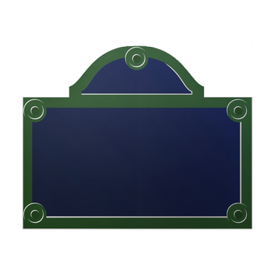

Il n'y a rien de mieux que prendre une semaine en fin d'été pour aller visiter notre capitale et découvrir tranquillement les monuments et lieux emblématiques de Paris. Sur 5 jours, j'ai pu découvrir les principaux monuments de la ville Lumière pour la première fois. Voici un petit résumé de cette semaine ainsi qu'une petite présentation des monuments visités.
| Jour 1 | Jour 2 | Jour 3 | Jour 4 | Jour 5 |
|---|---|---|---|---|
|
|
|
|
|
Me contacter: noelangevin72@gmail.com